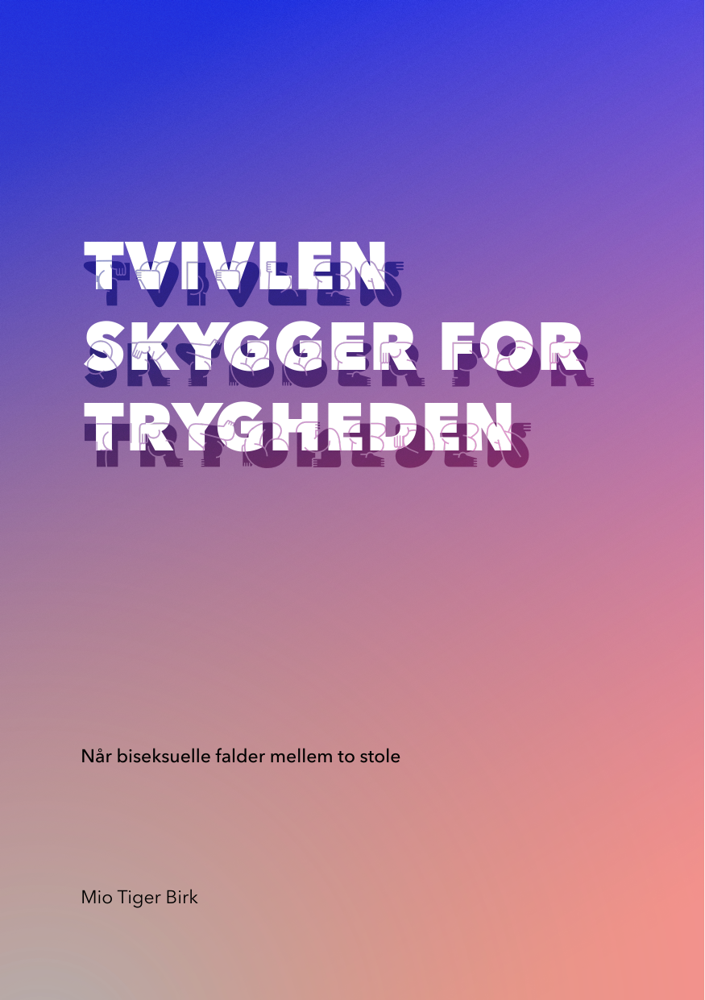

Mio Tiger Birk, ph.d.
Ikke bare køn
Køn er altid i bevægelse. For at forstå kønnets betydning må vi tage højde for alt det, køn væves sammen med. Når noget handler om køn, handler det derfor ikke bare om køn.
Tvivlen Skygger for Trygheden: Når biseksuelle falder mellem to stole
Når biseksuelle falder mellem to stole
Tvivl og manglende synlighed kan forme biseksuelle og andre bi+ personers liv – fra nære relationer til uddannelse og arbejdsliv. Med afsæt i bi- og panseksuelles egne fortællinger og forskning tilbyder bogen ny viden om bi+ personers trivsel og tryghed i en dansk kontekst.
Bogen er gratis, og du skal hverken oprette dig eller oplyse din e-mailadresse.

Dette materiale er støttet økonomisk af Offerfonden. Materialets udførelse, indhold og resultater er alene forfatterens ansvar. De vurderinger og synspunkter, der fremgår af materialet, er forfatterens egne og deles ikke nødvendigvis af Rådet for Offerfonden.
Udgivelser
-
Bog · 2026
Tvivlen Skygger for Trygheden: Når biseksuelle falder mellem to stole
-
Artikel · 2026
Mellem To Stole: Når alle er det lidt, er ingen det fuldt ud
-
Essay · 2025
Cat Ladies, Herbivores and Incels: Competing Meanings of Singlehood
-
Forskningsartikel · 2024
Phallic Metaphors and Metonyms: Emerging Meanings of Viagra and Masculinity in News Media
-
Digt · 2024
Det Uendelige Univers
-
Forskningsartikel · 2023
Reconfigurations of Illness and Masculinity on Instagram
Foredrag, presse og læsning
Foredrag og undervisning
Jeg holder foredrag og underviser om køn, seksualitet og bi+ trivsel, fra fagmiljøer til foreninger. Honorar efter aftale.
Presse
Pressefotos med kreditering, kort og lang biografi, og hvordan jeg omtales korrekt.
Med Ikke Bare Køn undersøger jeg kønnets betydning i samspil med temaer som seksualitet, trivsel og diskrimination.
Jeg trækker på min erfaring som forsker, formidler og underviser, og på min ph.d. i samfundsvidenskab fra Aarhus Universitet (2019). Er du interesseret i at høre mere, er du velkommen til at skrive til mig på kontakt@miobirk.com.
– Mio Tiger Birk